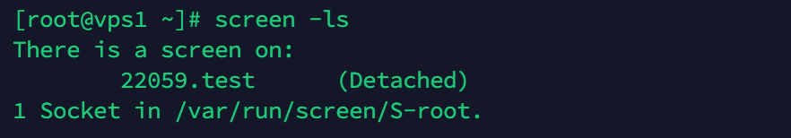
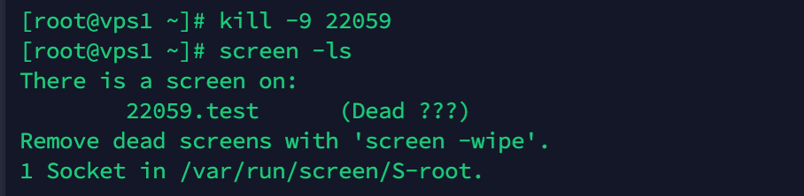

常常需要远程登录到Linux 服务器，运行一些需要很长时间才能完成的任务，在此期间不能关掉窗口或者断开连接，否则这个任务就会被杀掉，一切半途而废了。
screen命令可以实现当前窗口与任务分离，即使离线了，服务器仍在后台运行任务。当重新登录服务器，可以读取窗口线程，重新连接任务窗口
主要功能：
- 会话恢复
只要Screen本身没有终止，在其内部运行的会话都可以恢复。这一点对于远程登录的用户特别有用——即使网络连接中断，用户也不会失去对已经打开的命令行会话的控制。只要再次登录到主机上执行screen -r就可以恢复会话的运行。同样在暂时离开的时候，也可以执行分离命令detach，在保证里面的程序正常运行的情况下让Screen挂起（切换到后台）。这一点和图形界面下的VNC很相似。
- 多窗口
在Screen环境下，所有的会话都独立的运行，并拥有各自的编号、输入、输出和窗口缓存。用户可以通过快捷键在不同的窗口下切换，并可以自由的重定向各个窗口的输入和输出。Screen实现了基本的文本操作，如复制粘贴等；还提供了类似滚动条的功能，可以查看窗口状况的历史记录。窗口还可以被分区和命名，还可以监视后台窗口的活动。
- 会话共享
Screen可以让一个或多个用户从不同终端多次登录一个会话，并共享会话的所有特性（比如可以看到完全相同的输出）。它同时提供了窗口访问权限的机制，可以对窗口进行密码保护。
screen的使用：
安装
一般的linux系统都会自带screen,如果没有安装的话，使用
1 | $ sudo apt-get install screen |
或
1 | $ sudo yum install screen |
新建窗口
新建窗口有3种办法
第一种：
1 | $ screen |
第二种：
1 | $ screen -S name |
第三种：
1 | $ screen command |
会话分离
当一个窗口运行某个程序之后，想退出登录，让程序在后台运行。这时就需要和窗口会话分离,有2种方式：
第一种：
1 | $ ctrl+a+d |
第二种：
1 | $ screen -d name |
恢复会话窗口
首先查看有哪些窗口正在运行
1 | $ screen -ls |

1 | $ screen -r 22059 |
这样就能回到test窗口了
杀死会话窗口
如果想要关掉某个窗口，有3种方法：
第一种：
1 | $ kill -9 threadnum |
第二种：
1 | $ ctrl+a+k |
第三种：
1 | $ ctrl+a 进入命令模式，然后输入quite命令 |
清除死去的窗口
当窗口被杀死后，再用screen -ls 可以看到该窗口后面的(???dead)字样，说明窗口死了，但是仍在占用空间。这时需要清除窗口

1 | $ screen -wipe |